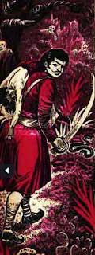

13. દિવાનનું મૃત્યુ |
ઘણી નિષ્ફળતાઓ પછી, રાજા વિક્રમાદિત્યે બેતાલને યોગી પાસે લઈ જવાના પ્રયાસમાં ફરી એક વખત બેતાલ તરફ પીઠ ફેરવી અને પ્રસ્થાન કર્યું. રસ્તો સાફ કરવા માટે, બેતાલે ફરીથી રાજાને નવી વાર્તા કહેવાનું શરૂ કર્યું.
બહુ જૂની વાર્તા છે, પુણ્યપુર નામના રાજ્યમાં યશકેતુ નામનો રાજા રાજ કરતો હતો. તેમની પાસે સત્યમણિ નામનો દીવાન હતો. સત્યમણિ ખૂબ જ બુદ્ધિશાળી અને ચતુર મંત્રી હતા. તે રાજાની તમામ બાબતોનું ધ્યાન રાખતો અને વિલાસી રાજા મંત્રી પર બધો જ બોજો નાખીને ભોગવિલાસમાં વ્યસ્ત રહેતો.
 રાજાના મોજશોખ અને વિલાસ પર વધુ પડતા ખર્ચને કારણે શાહી તિજોરીમાં ઘટાડો થવા લાગ્યો. પ્રજા પણ રાજા પર નારાજ થવા લાગી. જ્યારે મંત્રીને ખબર પડી કે બધા રાજાની ટીકા કરી રહ્યા છે, ત્યારે તે ખૂબ જ દુઃખી થયો. પછી જ્યારે તેણે જોયું કે રાજાની સાથે તેની પણ ટીકા થઈ રહી છે ત્યારે તેને ખૂબ જ ખરાબ લાગ્યું. સત્યમણિએ પોતાને શાંત કરવા માટે તીર્થયાત્રા પર જવાનો વિચાર કર્યો. તેણે રાજાને આ વિશે વાત કરી અને પરવાનગી લઈને તે તીર્થયાત્રા પર નીકળ્યો.
ચાલતાં ચાલતાં સત્યમણિ એક દરિયા કિનારે પહોંચ્યો. આખો દિવસ પસાર થઈ ગયો અને રાત થઈ ગઈ. તેણે વિચાર્યું કે તે આજે રાત્રે અહીં રોકાઈને આરામ કરશે. એમ વિચારીને તે એક ઝાડ નીચે સૂઈ ગયો.
મધ્યરાત્રિએ જ્યારે તેણે તેની આંખો ખોલી, ત્યારે તેણે સમુદ્રમાંથી એક ચમકતું ઝાડ ઊભું થતું જોયું. તેના પર વિવિધ પ્રકારના હીરા અને ઝવેરાત પહેરવામાં આવ્યા હતા. એક સુંદર છોકરી એ ઝાડ પર બેસીને વીણા વગાડી રહી હતી. આ દ્રશ્ય જોઈને સત્યમણિને પોતાની આંખો પર વિશ્વાસ ન આવ્યો. અચાનક તે ઝાડ અને તેના પર બેઠેલી છોકરી ગાયબ થઈ ગઈ. આ બધા પછી તે સ્તબ્ધ થઈ ગયો અને પાછો તેના શહેર તરફ ભાગ્યો.
જ્યારે તે રાજ્યમાં પહોંચ્યો, ત્યારે તેણે જોયું કે તેની ગેરહાજરીને કારણે રાજાએ તેનો તમામ લોભ ગુમાવી દીધો હતો. તેણે રાજાને આખી વાત કહી. દિવાનની આ વાત સાંભળીને રાજાના મનમાં તે છોકરીને મેળવવાની ઈચ્છા જાગી. તેણે દિવાનના ભરોસે આખું રાજ્ય છોડી દીધું અને સંતનો વેશ ધારણ કરીને તે દરિયા કિનારે પહોંચી ગયો.
જ્યારે રાત પડી ત્યારે રાજાએ પણ હીરા અને મોતીથી જડેલું વૃક્ષ જોયું. તે છોકરી હજુ પણ તે ઝાડ પર બેઠી હતી. રાજા તરીને છોકરી તરફ ગયો અને તેની સાથે પોતાનો પરિચય કરાવ્યો. પછી તેણે છોકરીને તેના વિશે પૂછ્યું. છોકરીએ કહ્યું, "મારું નામ મૃગાંકવતી છે અને હું રાજા ગાંધર્વ વિદ્યાધરની પુત્રી છું." પછી રાજાએ તેની સામે લગ્નનો પ્રસ્તાવ મૂક્યો અને યુવતીએ કહ્યું, “રાજા, તારા જેવા મહાન રાજાની રાણી બનીને મારું જીવન સફળ થશે, પણ મારી એક શરત છે.
દરેક કૃષ્ણ પક્ષ અને શુક્લ પક્ષની દરેક ચતુર્દશી અને અષ્ટમી પર, હું એક રાક્ષસ પાસે જાઉં છું, જે મને ગળી જાય છે. તમારે એ રાક્ષસનો નાશ કરવો પડશે.” રાજા યશકેતુએ તરત જ આ શરત સ્વીકારી લીધી.
આ પછી શુક્લપક્ષની ચતુર્દશી આવી અને રાત્રે મૃગાંકવતી બહાર આવી. રાજા પણ તેની સાથે ગયો અને સંતાઈને રાક્ષસની રાહ જોવા લાગ્યો. થોડી વાર પછી રાક્ષસ ત્યાં આવ્યો અને છોકરીને ગળી ગયો. આ જોઈને રાજાએ રાક્ષસ પર હુમલો કર્યો અને તેની તલવારથી તેનું પેટ ફાડી નાખ્યું અને મૃગાંકવતીને જીવતી બહાર કાઢી.
આ પછી રાજાએ તેને પૂછ્યું કે આ બધું શું છે? આના જવાબમાં મૃગાંકવતીએ કહ્યું, “હું દર અષ્ટમી અને ચતુર્દશીના દિવસે અહીં શિવની પૂજા કરવા આવું છું અને જ્યાં સુધી હું ઘરે પાછો ન ફરું ત્યાં સુધી મારા પિતા મારા વિના ક્યારેય જમશે નહીં. એકવાર મને ઘરે પહોંચવામાં મોડું થયું અને પિતાને લાંબા સમય સુધી ભૂખ્યા રહેવું પડ્યું. જ્યારે હું ઘરે પાછો આવ્યો ત્યારે તે ખૂબ જ ગુસ્સે થયો અને મને શ્રાપ આપ્યો કે જ્યારે પણ હું ચતુર્દશીના દિવસે પૂજા કરવા જઈશ ત્યારે કોઈ રાક્ષસ મને ગળી જશે. પછી હું તેનું પેટ ફાડીને બહાર આવીશ.
જ્યારે મેં તેને મને શ્રાપમાંથી મુક્ત કરવા વિનંતી કરી ત્યારે તેણે કહ્યું કે જ્યારે પુણ્યપુરનો રાજા મારી સાથે લગ્ન કરવા તે રાક્ષસને મારી નાખશે ત્યારે હું શ્રાપમાંથી મુક્ત થઈશ.
છોકરીને શ્રાપમાંથી મુક્ત કર્યા પછી, રાજા તેને તેની સાથે તેના રાજ્યમાં લાવ્યો અને ખૂબ જ ધામધૂમથી તેના લગ્ન કર્યા. આ પછી રાજાએ દિવાનને આખી વાત કહી અને આ બધું સાંભળીને દિવાનનું મૃત્યુ થયું.
આટલું કહીને બેતાલે રાજા વિક્રમને પૂછ્યું, “હે રાજા! હવે તમે જ કહો કે આ બધું સાંભળીને દિવાન કેમ મરી ગયો?
વિક્રમે કહ્યું, “દીવાન મૃત્યુ પામ્યો કારણ કે તેણે વિચાર્યું કે રાજા ફરી એકવાર સ્ત્રીના લોભનો શિકાર બન્યો છે અને તેના ભોગવિલાસથી રાજ્યની સ્થિતિ ફરીથી બગડશે. તે છોકરી વિશે રાજાને ન જણાવવું સારું હતું.”
રાજા વિક્રમે જવાબ આપતાની સાથે જ બેતાલ ફરીથી ઝાડ તરફ ઉડી અને તેના પર ઊંધો લટકી ગયો. તે જ સમયે રાજા વિક્રમાદિત્ય તેને પકડવા બેતાલની પાછળ ફરી એક વાર દોડ્યો.
કોઈ પણ વ્યક્તિએ આનંદમાં એટલો ડૂબેલો ન હોવો જોઈએ કે તે બધું ગુમાવી બેસે. તમારી પરિસ્થિતિ અને જરૂરિયાતો અનુસાર કામ કરવું સારું છે